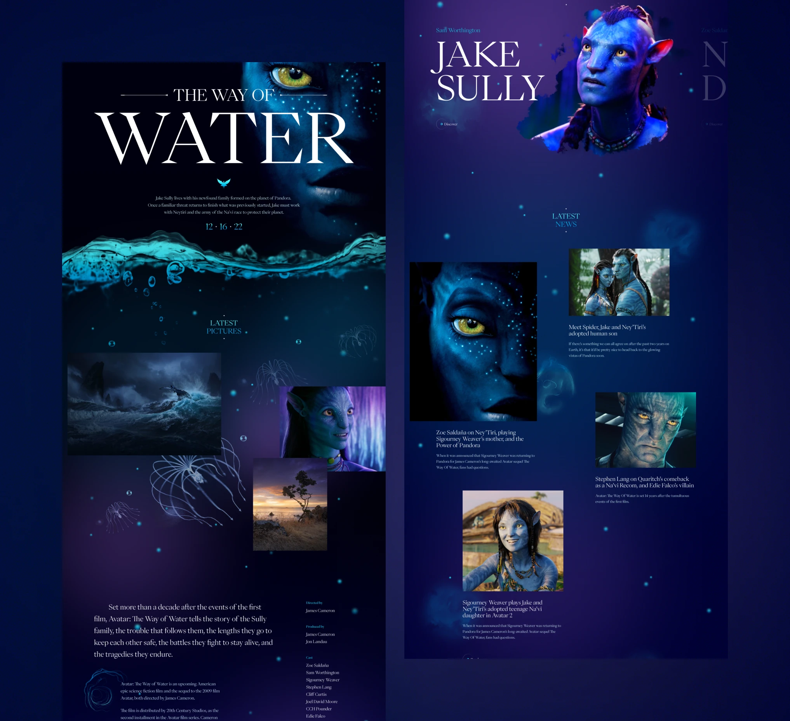
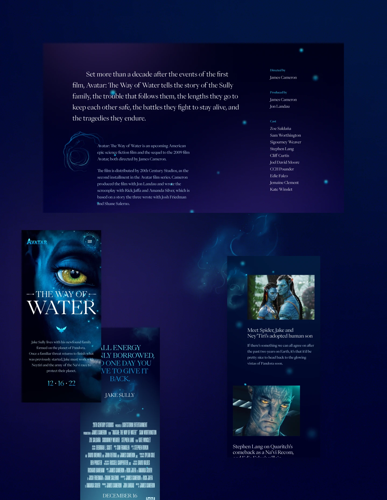
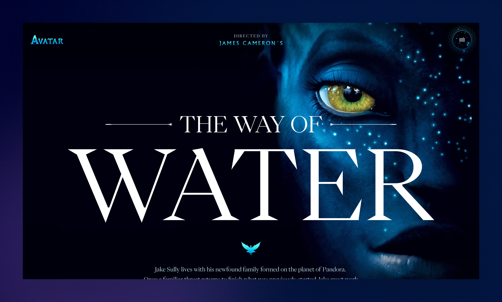
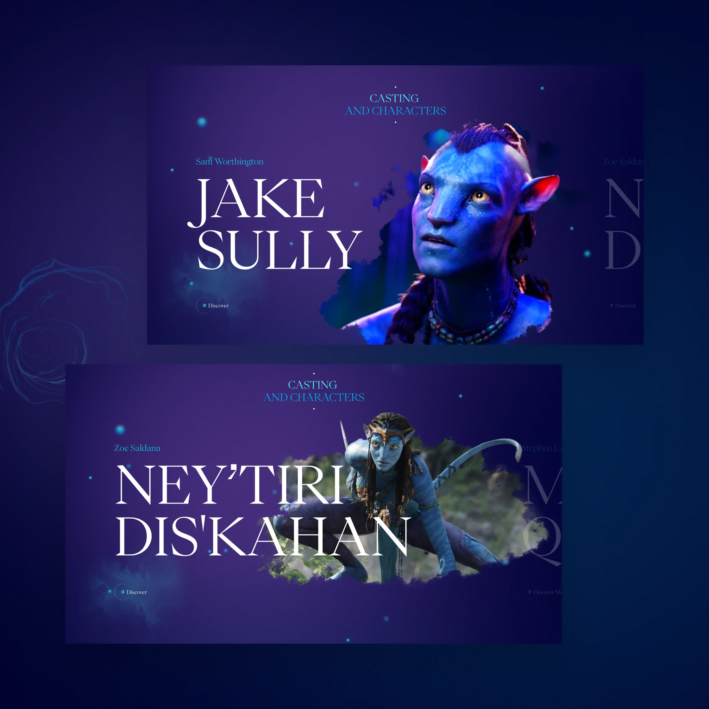
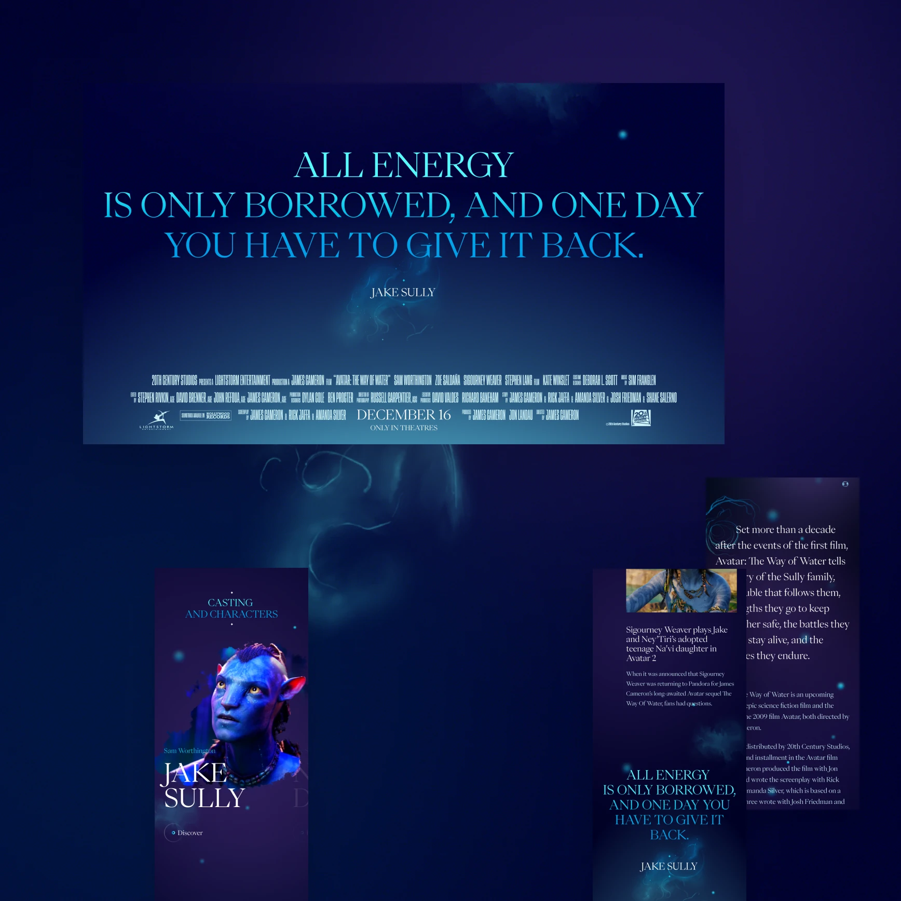
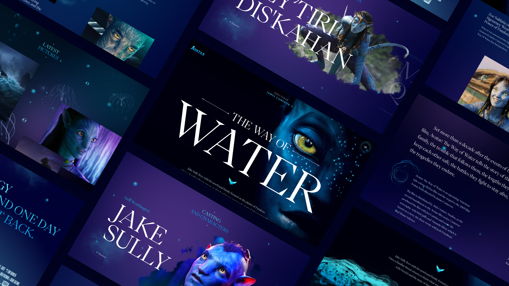

The Way of Water
December 2022
This is a fictional web experiment created to promote the movie Avatar: The Way of Water. All content has been sourced from official promotional materials and fan websites. Images and videos were found online and may have been edited for visual consistency.
This project is not affiliated with the official Avatar franchise and was created solely for design and learning purposes.
-
This is a
Personal project





